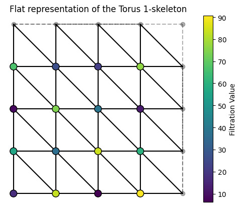

7. Computing the Reeb graph of a filtered simplicial complex
This notebook gives a tutorial to computing the Reeb graph from a filtered simplicial complex. We assume that this complex is given as the LowerStar class (see LowerStar documentation for details).
[2]:
from cereeberus import LowerStar, ReebGraph, computeReeb
Consider the following simplicial complex with height function.

First, we construct this simplicial complex with a lower star filtration, were we need only specify the top dimensional simplices. Note that the LowerStar class is built on gudhi’s SimplexTree, so it retains all of that class’ functionality.
[3]:
K = LowerStar()
K.insert([0, 1, 2])
K.insert([1, 3])
K.insert([2,3])
K.insert([0,4])
K.assign_filtration([0], 0.0)
K.assign_filtration([1], 3.0)
K.assign_filtration([2], 5.0)
K.assign_filtration([3], 7)
K.assign_filtration([4], 9.0)
Then computing the Reeb graph of this complex is as easy as the following.
[4]:
R = computeReeb(K)
R.draw()

For a slightly more complex example, we have the following Torus example generator.
[5]:
from cereeberus.data import Torus
[6]:
T = Torus()
T.generate_grid(grid_size = 4)
T.assign_random_values(0,100, seed=1986)
T.draw()

[7]:
R = computeReeb(T)
R.remove_all_regular_vertices() # Simplify for visualization
[8]:
R.draw(cpx = 2)